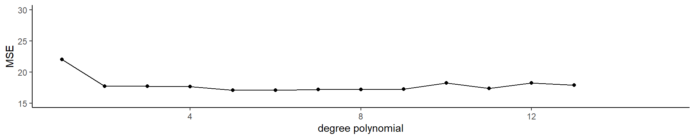

library(tidyverse)
library(ISLR)
library(tidymodels)
library(gridExtra)Chapter 5 and tidymodels
Setup
Cross validation
üí° Big idea
- We have determined that it is sensible to use a test set to calculate metrics like prediction error
Cross validation
üí° Big idea
- We have determined that it is sensible to use a test set to calculate metrics like prediction error
Why?
Cross validation
üí° Big idea
- We have determined that it is sensible to use a test set to calculate metrics like prediction error
How could we do this?
Cross validation
üí° Big idea
- We have determined that it is sensible to use a test set to calculate metrics like prediction error
- What if we don’t have a separate data set to test our model on?
- üéâ We can use resampling methods to estimate the test-set prediction error
Training error versus test error
What is the difference? Which is typically larger?
- The training error is calculated by using the same observations used to fit the statistical learning model
- The test error is calculated by using a statistical learning method to predict the response of new observations
- The training error rate typically underestimates the true prediction error rate
Estimating prediction error
- Best case scenario: We have a large data set to test our model on
- This is not always the case!
. . .
üí° Let‚Äôs instead find a way to estimate the test error by holding out a subset of the training observations from the model fitting process, and then applying the statistical learning method to those held out observations
Approach #1: Validation set
- Randomly divide the available set up samples into two parts: a training set and a validation set
- Fit the model on the training set, calculate the prediction error on the validation set
. . .
If we have a quantitative predictor what metric would we use to calculate this test error?
- Often we use Mean Squared Error (MSE)
Approach #1: Validation set
- Randomly divide the available set up samples into two parts: a training set and a validation set
- Fit the model on the training set, calculate the prediction error on the validation set
If we have a qualitative predictor what metric would we use to calculate this test error?
- Often we use misclassification rate
Approach #1: Validation set

. . .
\[\Large\color{orange}{MSE_{\texttt{test-split}} = \textrm{Ave}_{i\in\texttt{test-split}}[y_i-\hat{f}(x_i)]^2}\]
. . .
\[\Large\color{orange}{Err_{\texttt{test-split}} = \textrm{Ave}_{i\in\texttt{test-split}}I[y_i\neq \mathcal{\hat{C}}(x_i)]}\]
Approach #1: Validation set
Auto example:
- We have 392 observations.
- Trying to predict
mpgfromhorsepower. - We can split the data in half and use 196 to fit the model and 196 to test
Approach #1: Validation set
\(\color{orange}{MSE_{\texttt{test-split}}}\)
. . .
\(\color{orange}{MSE_{\texttt{test-split}}}\)
. . .
\(\color{orange}{MSE_{\texttt{test-split}}}\)
. . .
\(\color{orange}{MSE_{\texttt{test-split}}}\)
Approach #1: Validation set
Auto example:
- We have 392 observations.
- Trying to predict
mpgfromhorsepower. - We can split the data in half and use 196 to fit the model and 196 to test - what if we did this many times?
Approach #1: Validation set (Drawbacks)
- the validation estimate of the test error can be highly variable, depending on which observations are included in the training set and which observations are included in the validation set
- In the validation approach, only a subset of the observations (those that are included in the training set rather than in the validation set) are used to fit the model
- Therefore, the validation set error may tend to overestimate the test error for the model fit on the entire data set
Approach #2: K-fold cross validation
üí° The idea is to do the following:
- Randomly divide the data into \(K\) equal-sized parts
- Leave out part \(k\), fit the model to the other \(K - 1\) parts (combined)
- Obtain predictions for the left-out \(k\)th part
- Do this for each part \(k = 1, 2,\dots K\), and then combine the result
K-fold cross validation
\(\color{orange}{MSE_{\texttt{test-split-1}}}\)
. . .
\(\color{orange}{MSE_{\texttt{test-split-2}}}\)
. . .
\(\color{orange}{MSE_{\texttt{test-split-3}}}\)
. . .

\(\color{orange}{MSE_{\texttt{test-split-4}}}\)
Take the mean of the \(k\) MSE values
Application Exercise
Create a new R project, then a new quarto file with cv in its name in that project. Answer the questions in that file.
If we use 10 folds:
- What percentage of the training data is used in each analysis for each fold?
- What percentage of the training data is used in the assessment for each fold?
02:00
Estimating prediction error (quantitative outcome)
- Split the data into K parts, where \(C_1, C_2, \dots, C_k\) indicate the indices of observations in part \(k\)
- \(CV_{(K)} = \sum_{k=1}^K\frac{n_k}{n}MSE_k\)
- \(MSE_k = \sum_{i \in C_k} (y_i - \hat{y}_i)^2/n_k\)
- \(n_k\) is the number of observations in group \(k\)
- \(\hat{y}_i\) is the fit for observation \(i\) obtained from the data with the part \(k\) removed
- If we set \(K = n\), we’d have \(n-fold\) cross validation which is the same as leave-one-out cross validation (LOOCV)
Estimating prediction error (quantitative outcome)
- Split the data into K parts, where \(C_1, C_2, \dots, C_k\) indicate the indices of observations in part \(k\)
- \(CV_{(K)} = \sum_{k=1}^K\frac{n_k}{n}MSE_k\)
- \(MSE_k = \sum_{i \in C_k} (y_i - \hat{y}_i)^2/n_k\)
- \(n_k\) is the number of observations in group \(k\)
- \(\hat{y}_i\) is the fit for observation \(i\) obtained from the data with the part \(k\) removed
- If we set \(K = n\), we’d have \(n-fold\) cross validation which is the same as leave-one-out cross validation (LOOCV)
Leave-one-out cross validation
. . .
. . .
\[\dots\]

Special Case!
- With linear regression, you can actually calculate the LOOCV error without having to iterate!
- \(CV_{(n)} = \frac{1}{n}\sum_{i=1}^n\left(\frac{y_i-\hat{y}_i}{1-h_i}\right)^2\)
- \(\hat{y}_i\) is the \(i\)th fitted value from the linear model
- \(h_i\) is the diagonal of the ‚Äúhat‚Äù matrix (remember that! üéì)
Picking \(K\)
- \(K\) can vary from 2 (splitting the data in half each time) to \(n\) (LOOCV)
- LOOCV is sometimes useful but usually the estimates from each fold are very correlated, so their average can have a high variance
- A better choice tends to be \(K=5\) or \(K=10\)
Bias variance trade-off
- Since each training set is only \((K - 1)/K\) as big as the original training set, the estimates of prediction error will typically be biased upward
- This bias is minimized when \(K = n\) (LOOCV), but this estimate has a high variance
- \(K =5\) or \(K=10\) provides a nice compromise for the bias-variance trade-off
Approach #2: K-fold Cross Validation
Auto example:
- We have 392 observations.
- Trying to predict
mpgfromhorsepower
Estimating prediction error (qualitative outcome)
- The premise is the same as cross valiation for quantitative outcomes
- Split the data into K parts, where \(C_1, C_2, \dots, C_k\) indicate the indices of observations in part \(k\)
- \(CV_K = \sum_{k=1}^K\frac{n_k}{n}Err_k\)
- \(Err_k = \sum_{i\in C_k}I(y_i\neq\hat{y}_i)/n_k\) (misclassification rate)
- \(n_k\) is the number of observations in group \(k\)
- \(\hat{y}_i\) is the fit for observation \(i\) obtained from the data with the part \(k\) removed
Estimating prediction error (qualitative outcome)
- The premise is the same as cross valiation for quantitative outcomes
- Split the data into K parts, where \(C_1, C_2, \dots, C_k\) indicate the indices of observations in part \(k\)
- \(CV_K = \sum_{k=1}^K\frac{n_k}{n}Err_k\)
- \(Err_k = \sum_{i\in C_k}I(y_i\neq\hat{y}_i)/n_k\) (misclassification rate)
- \(n_k\) is the number of observations in group \(k\)
- \(\hat{y}_i\) is the fit for observation \(i\) obtained from the data with the part \(k\) removed
tidymodels
Application Exercise
Create a new
quartofile in your project and addtidymodelsin the name.Load the packages by running the top chunk of R code
library(tidymodels)
library(broom)
library(ISLR)
library(countdown)tidymodels

- tidymodels is an opinionated collection of R packages designed for modeling and statistical analysis.
- All packages share an underlying philosophy and a common grammar.
Step 1: Specify the model
- Pick the model
- Set the engine
Specify the model
linear_reg() |>
set_engine("lm")Specify the model
linear_reg() |>
set_engine("glmnet")Specify the model
linear_reg() |>
set_engine("spark")Specify the model
decision_tree() |>
set_engine("rpart")Specify the model
- All available models:
Application Exercise
- Write a pipe that creates a model that uses
lm()to fit a linear regression using tidymodels. Save it aslm_specand look at the object. What does it return?
Hint: you’ll need https://www.tidymodels.org
05:00
Answer
lm_spec <-
linear_reg() |> # Pick linear regression
set_engine(engine = "lm") # set engine
lm_specLinear Regression Model Specification (regression)
Computational engine: lm Fit the data
- You can train your model using the
fit()function
fit(lm_spec,
mpg ~ horsepower,
data = Auto)parsnip model object
Call:
stats::lm(formula = mpg ~ horsepower, data = data)
Coefficients:
(Intercept) horsepower
39.9359 -0.1578 Application Exercise
- Fit the model:
library(ISLR)
lm_fit <- fit(lm_spec,
mpg ~ horsepower,
data = Auto)
lm_fitDoes this give the same results as
lm(mpg ~ horsepower, data = Auto)03:00
Answer
lm_fit <- fit(lm_spec,
mpg ~ horsepower,
data = Auto)
lm_fitparsnip model object
Call:
stats::lm(formula = mpg ~ horsepower, data = data)
Coefficients:
(Intercept) horsepower
39.9359 -0.1578 lm(mpg ~ horsepower, data = Auto)
Call:
lm(formula = mpg ~ horsepower, data = Auto)
Coefficients:
(Intercept) horsepower
39.9359 -0.1578 Get predictions
lm_fit |>
predict(new_data = Auto)- Uses the
predict()function - ‼️
new_datahas an underscore - üòÑ This automagically creates a data frame
Get predictions
lm_fit |>
predict(new_data = Auto) |>
bind_cols(Auto)# A tibble: 392 × 10
.pred mpg cylinders displacement horsepower weight acceleration year origin name
* <dbl> <dbl> <dbl> <dbl> <dbl> <dbl> <dbl> <dbl> <dbl> <fct>
1 19.4 18 8 307 130 3504 12 70 1 chevrol…
2 13.9 15 8 350 165 3693 11.5 70 1 buick s…
3 16.3 18 8 318 150 3436 11 70 1 plymout…
4 16.3 16 8 304 150 3433 12 70 1 amc reb…
5 17.8 17 8 302 140 3449 10.5 70 1 ford to…
6 8.68 15 8 429 198 4341 10 70 1 ford ga…
7 5.21 14 8 454 220 4354 9 70 1 chevrol…
8 6.00 14 8 440 215 4312 8.5 70 1 plymout…
9 4.42 14 8 455 225 4425 10 70 1 pontiac…
10 9.95 15 8 390 190 3850 8.5 70 1 amc amb…
# ℹ 382 more rows. . .
What does bind_cols do?
Get predictions
lm_fit |>
predict(new_data = Auto) |>
bind_cols(Auto)# A tibble: 392 × 10
.pred mpg cylinders displacement horsepower weight acceleration year origin name
* <dbl> <dbl> <dbl> <dbl> <dbl> <dbl> <dbl> <dbl> <dbl> <fct>
1 19.4 18 8 307 130 3504 12 70 1 chevrol…
2 13.9 15 8 350 165 3693 11.5 70 1 buick s…
3 16.3 18 8 318 150 3436 11 70 1 plymout…
4 16.3 16 8 304 150 3433 12 70 1 amc reb…
5 17.8 17 8 302 140 3449 10.5 70 1 ford to…
6 8.68 15 8 429 198 4341 10 70 1 ford ga…
7 5.21 14 8 454 220 4354 9 70 1 chevrol…
8 6.00 14 8 440 215 4312 8.5 70 1 plymout…
9 4.42 14 8 455 225 4425 10 70 1 pontiac…
10 9.95 15 8 390 190 3850 8.5 70 1 amc amb…
# ℹ 382 more rowsWhich column has the predicted values?
Application Exercise
03:00
- Edit the code below to add the original data to the predicted data.
mpg_pred <- lm_fit |>
predict(new_data = Auto) |>
---Get predictions
mpg_pred <- lm_fit |>
predict(new_data = Auto) |>
bind_cols(Auto)
mpg_pred# A tibble: 392 × 10
.pred mpg cylinders displacement horsepower weight acceleration year origin name
* <dbl> <dbl> <dbl> <dbl> <dbl> <dbl> <dbl> <dbl> <dbl> <fct>
1 19.4 18 8 307 130 3504 12 70 1 chevrol…
2 13.9 15 8 350 165 3693 11.5 70 1 buick s…
3 16.3 18 8 318 150 3436 11 70 1 plymout…
4 16.3 16 8 304 150 3433 12 70 1 amc reb…
5 17.8 17 8 302 140 3449 10.5 70 1 ford to…
6 8.68 15 8 429 198 4341 10 70 1 ford ga…
7 5.21 14 8 454 220 4354 9 70 1 chevrol…
8 6.00 14 8 440 215 4312 8.5 70 1 plymout…
9 4.42 14 8 455 225 4425 10 70 1 pontiac…
10 9.95 15 8 390 190 3850 8.5 70 1 amc amb…
# ℹ 382 more rowsCalculate the error
- Root mean square error
mpg_pred |>
rmse(truth = mpg, estimate = .pred)# A tibble: 1 × 3
.metric .estimator .estimate
<chr> <chr> <dbl>
1 rmse standard 4.89. . .
What is this estimate? (training error? testing error?)
Validation set approach
Auto_split <- initial_split(Auto, prop = 0.5)
Auto_split<Training/Testing/Total>
<196/196/392>. . .
How many observations are in the training set?
Validation set approach
Auto_split <- initial_split(Auto, prop = 0.5)
Auto_split<Training/Testing/Total>
<196/196/392>How many observations are in the test set?
Validation set approach
Auto_split <- initial_split(Auto, prop = 0.5)
Auto_split<Training/Testing/Total>
<196/196/392>How many observations are there in total?
Validation set approach
Auto_split <- initial_split(Auto, prop = 0.5)
Auto_split<Training/Testing/Total>
<196/196/392>- Extract the training and testing data
training(Auto_split)
testing(Auto_split)Validation set approach
Auto_train <- training(Auto_split)Auto_train# A tibble: 196 × 9
mpg cylinders displacement horsepower weight acceleration year origin name
<dbl> <dbl> <dbl> <dbl> <dbl> <dbl> <dbl> <dbl> <fct>
1 37.7 4 89 62 2050 17.3 81 3 toyota tercel
2 27 4 97 60 1834 19 71 2 volkswagen mo…
3 22 6 232 112 2835 14.7 82 1 ford granada l
4 16 6 250 100 3781 17 74 1 chevrolet che…
5 25 4 90 71 2223 16.5 75 2 volkswagen da…
6 18 6 232 100 2945 16 73 1 amc hornet
7 38.1 4 89 60 1968 18.8 80 3 toyota coroll…
8 23 4 97 54 2254 23.5 72 2 volkswagen ty…
9 15 8 302 130 4295 14.9 77 1 mercury couga…
10 34 4 108 70 2245 16.9 82 3 toyota corolla
# ℹ 186 more rows Application Exercise
- Copy the code below, fill in the blanks to fit a model on the training data then calculate the test RMSE.
set.seed(100)
Auto_split <- ________
Auto_train <- ________
Auto_test <- ________
lm_fit <- fit(lm_spec,
mpg ~ horsepower,
data = ________)
mpg_pred <- ________ |>
predict(new_data = ________) |>
bind_cols(________)
rmse(________, truth = ________, estimate = ________)06:00
A faster way!
- You can use
last_fit()and specify the split - This will automatically train the data on the
traindata from the split - Instead of specifying which metric to calculate (with
rmseas before) you can just usecollect_metrics()and it will automatically calculate the metrics on thetestdata from the split
A faster way!
set.seed(100)
Auto_split <- initial_split(Auto, prop = 0.5)
lm_fit <- last_fit(lm_spec,
mpg ~ horsepower,
split = Auto_split)
lm_fit |>
collect_metrics()# A tibble: 2 × 4
.metric .estimator .estimate .config
<chr> <chr> <dbl> <chr>
1 rmse standard 4.96 Preprocessor1_Model1
2 rsq standard 0.613 Preprocessor1_Model1A faster way!
set.seed(100)
Auto_split <- initial_split(Auto, prop = 0.5)
lm_fit <- last_fit(lm_spec,
mpg ~ horsepower,
split = Auto_split)
lm_fit |>
collect_metrics()# A tibble: 2 × 4
.metric .estimator .estimate .config
<chr> <chr> <dbl> <chr>
1 rmse standard 4.96 Preprocessor1_Model1
2 rsq standard 0.613 Preprocessor1_Model1What about cross validation?
Auto_cv <- vfold_cv(Auto, v = 5)
Auto_cv# 5-fold cross-validation
# A tibble: 5 × 2
splits id
<list> <chr>
1 <split [313/79]> Fold1
2 <split [313/79]> Fold2
3 <split [314/78]> Fold3
4 <split [314/78]> Fold4
5 <split [314/78]> Fold5What about cross validation?
- Instead of
fitwe will usefit_resamples
. . .
What about cross validation?
How do we get the metrics out? With collect_metrics() again!
. . .
results <- fit_resamples(lm_spec,
mpg ~ horsepower,
resamples = Auto_cv)
results |>
collect_metrics()# A tibble: 2 × 6
.metric .estimator mean n std_err .config
<chr> <chr> <dbl> <int> <dbl> <chr>
1 rmse standard 4.88 5 0.385 Preprocessor1_Model1
2 rsq standard 0.616 5 0.0220 Preprocessor1_Model1 Application Exercise
05:00
- Edit the code below to get the 5-fold cross validation error rate for the following model:
\(mpg = \beta_0 + \beta_1 horsepower + \beta_2 horsepower^2+ \epsilon\)
Auto_cv <- vfold_cv(Auto, v = 5)
results <- fit_resamples(lm_spec,
----,
resamples = ---)
results |>
collect_metrics()- What do you think
rsqis?
Answer
Auto_cv <- vfold_cv(Auto, v = 5)
results <- fit_resamples(lm_spec,
mpg ~ horsepower + I(horsepower^2),
resamples = Auto_cv)
results |>
collect_metrics()# A tibble: 2 × 6
.metric .estimator mean n std_err .config
<chr> <chr> <dbl> <int> <dbl> <chr>
1 rmse standard 4.38 5 0.110 Preprocessor1_Model1
2 rsq standard 0.688 5 0.0177 Preprocessor1_Model1 Application Exercise
Fit 3 models on the data using 5 fold cross validation:
\(mpg = \beta_0 + \beta_1 horsepower + \epsilon\)
\(mpg = \beta_0 + \beta_1 horsepower + \beta_2 horsepower^2+ \epsilon\)
\(mpg = \beta_0 + \beta_1 horsepower + \beta_2 horsepower^2+ \beta_3 horsepower^3 +\epsilon\)
Collect the metrics from each model, saving the results as
results_1,results_2,results_3Which model is “best”?
08:00